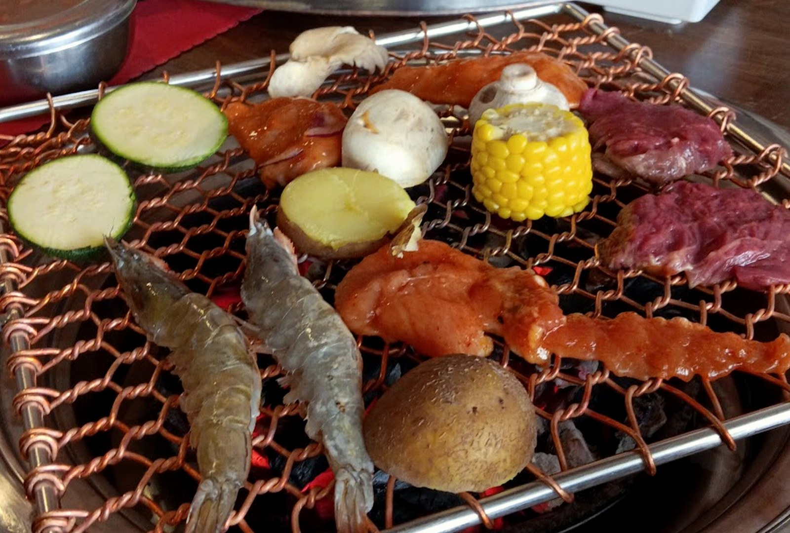
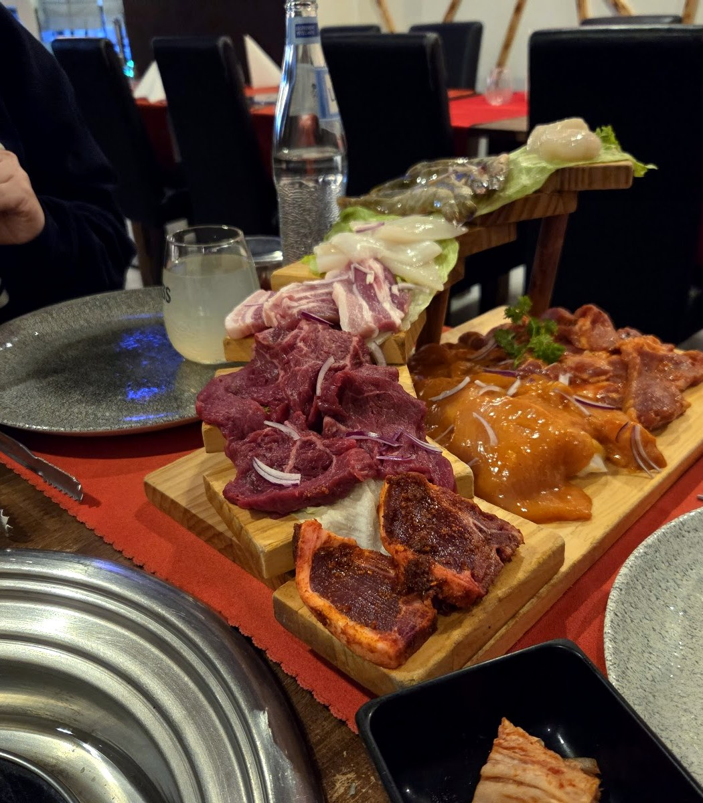
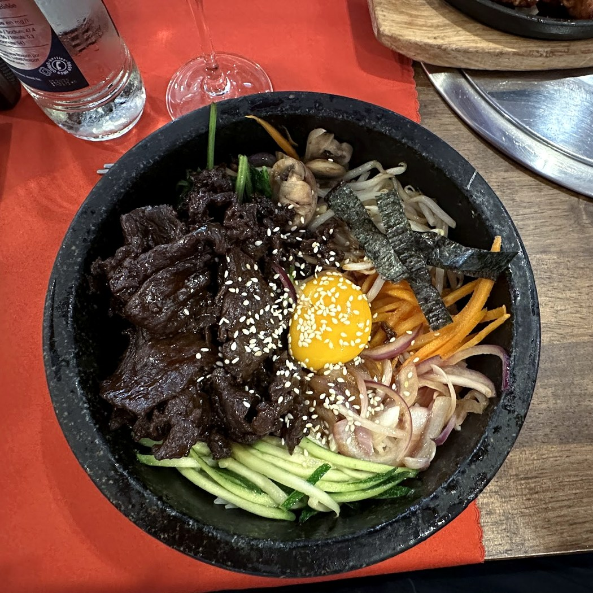
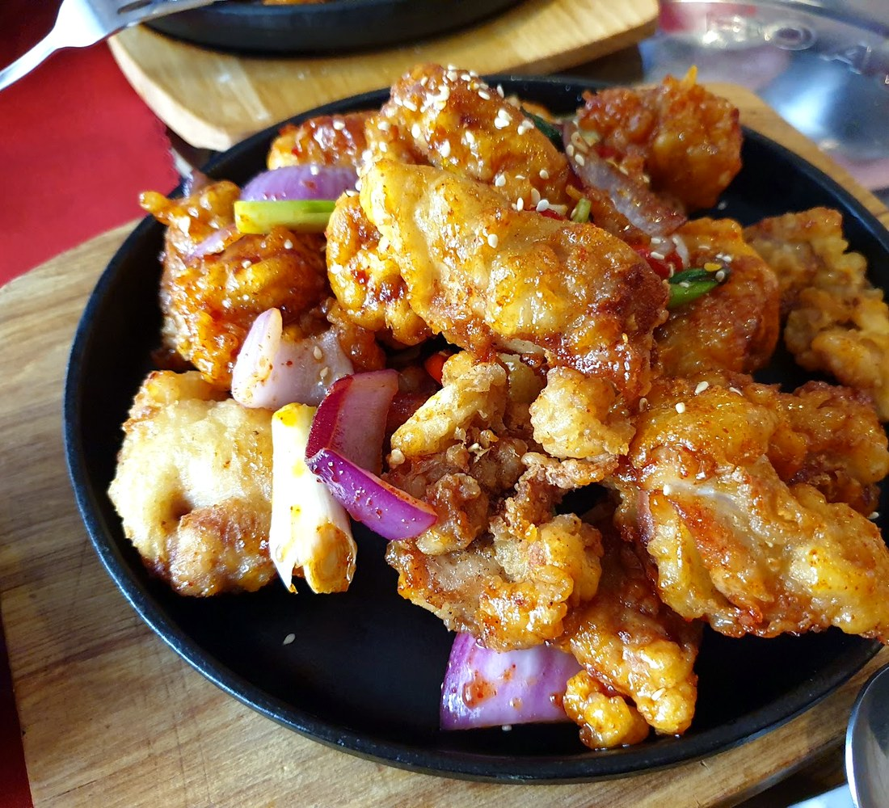
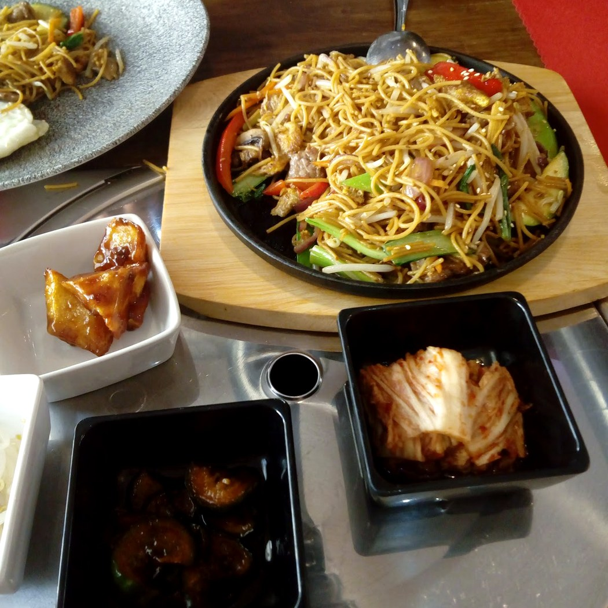
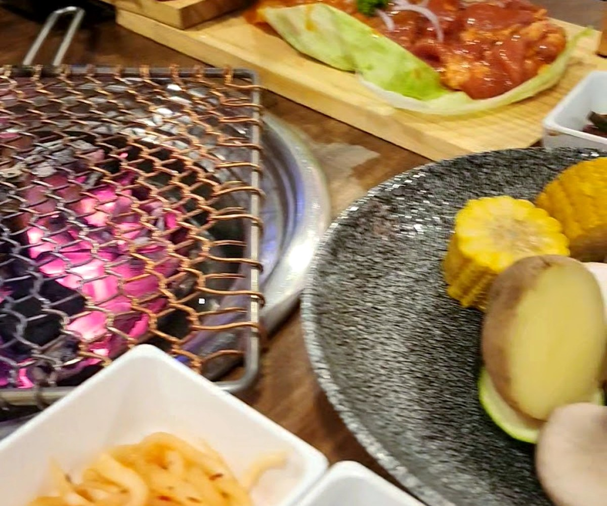
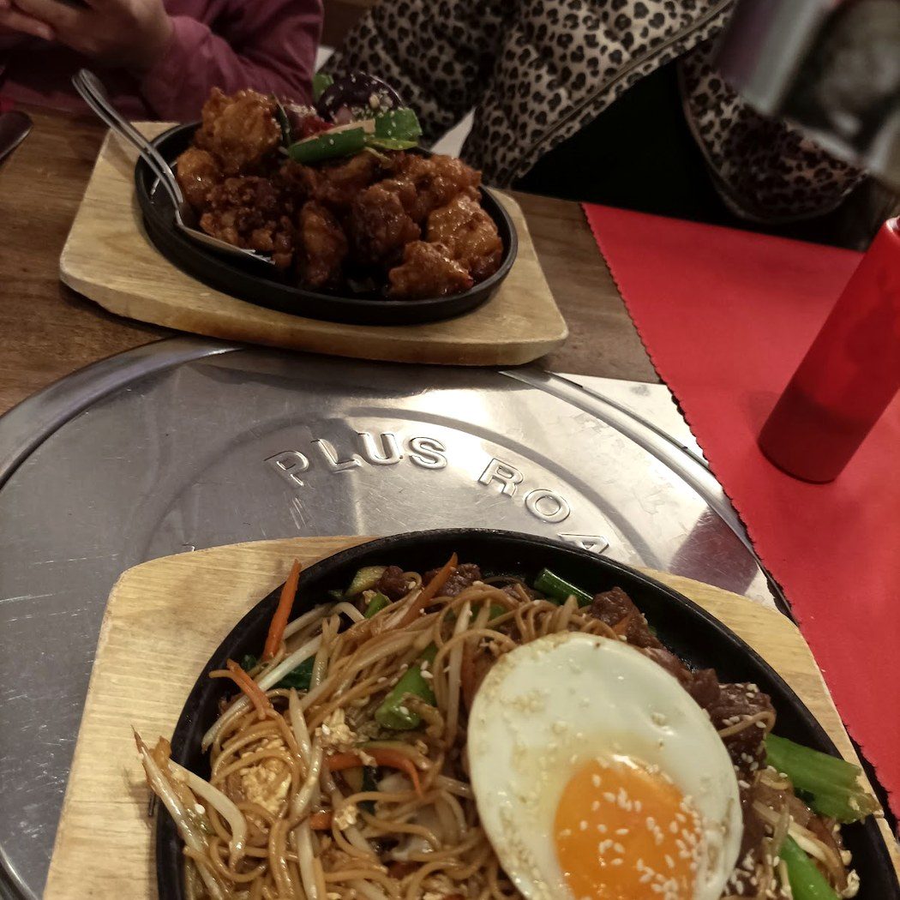
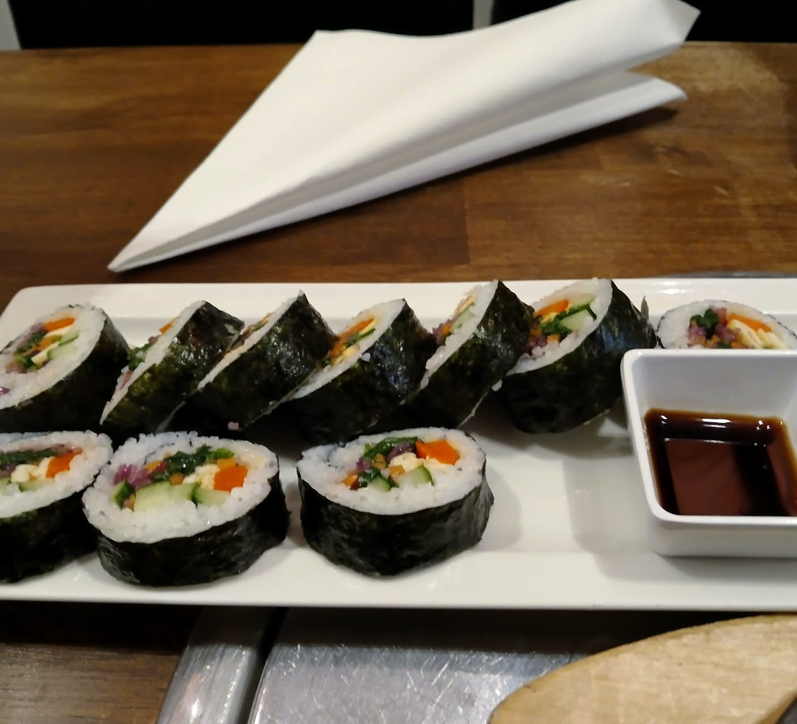
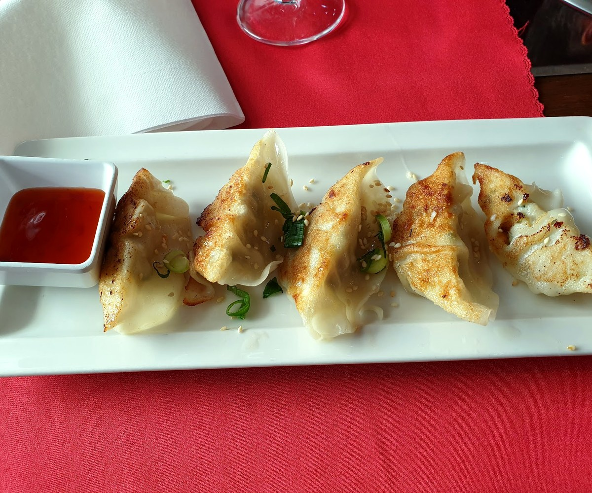

Gamja감자
On allume le grill à votre table, et les petits plats coréens n'arrêtent pas d'arriver.
Le barbecueà votre table.
On vous apporte les viandes marinées — bulgogi, galbi — et vous les grillez vous-même sur le charbon, au centre de la table.
C'est tout le rituel du barbecue coréen : la viande qui grésille, la fumée, et autour, le banchan — kimchi, pousses, légumes marinés — qu'on repique entre deux bouchées. On mange lentement, on partage, on recommande.

Grillé à tableLa cuisine coréenne
Bibimbap, poulet frit coréen, ragoût de kimchi, japchae, raviolis, kimbap — la cuisine réconfortante de la maison, à côté du grill.







Ce qu'on sert
Le barbecue à griller et la cuisine coréenne de la maison. Voici les plats — les prix se confirment sur place.
Le barbecue (à griller)
Soupes & ragoûts
Les plats
À côté
Plats relevés à partir de sources publiques (avis, annuaires), à titre indicatif. Aucun prix n'est publié : la carte et les prix sont à confirmer avec la maison.
감자,la pomme de terre.
« Gamja », c'est la pomme de terre — humble, généreuse, réconfortante. C'est tout l'esprit de la maison : une table où les petits plats n'arrêtent pas d'arriver, où l'on grille, on partage, et on reste.
Nous trouver
L-3590 Dudelange
Service du soir · horaires à confirmer